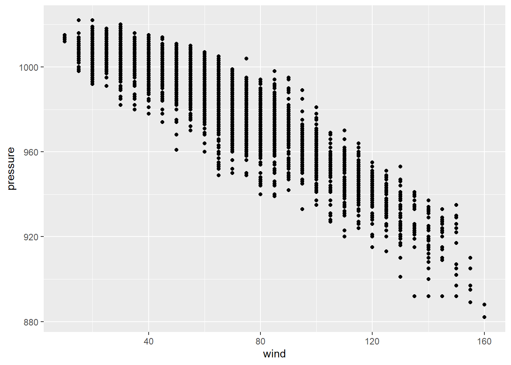

This week we will cover data summaries, data structure, linear regression and its assumptions.
At the beginning of each session we will need to load our libraries, so let’s load the packages for this week
library(tidyverse)
library(plotrix)
library(ggpubr) #install.packages("ggpubr")
library(qqplotr) #install.packages("qqplotr")
library(PerformanceAnalytics)#install.packages("PerformanceAnalytics")
library(gcookbook)
library(tidyr) #install.packages("tidyr") Mean, variance, and error values are always required for the final report. It can take a while to sort the data in the right way and several times you may want to check how your data looks frequently. Tydiverse is a complex group of packages that include ggplot2 and dplyr. Adding, changing, combining, removing is simple with dplyr.
data("storms")
head(storms) #look at the first 6 rows## # A tibble: 6 x 13
## name year month day hour lat long status category wind pressure
## <chr> <dbl> <dbl> <int> <dbl> <dbl> <dbl> <chr> <ord> <int> <int>
## 1 Amy 1975 6 27 0 27.5 -79 tropi~ -1 25 1013
## 2 Amy 1975 6 27 6 28.5 -79 tropi~ -1 25 1013
## 3 Amy 1975 6 27 12 29.5 -79 tropi~ -1 25 1013
## 4 Amy 1975 6 27 18 30.5 -79 tropi~ -1 25 1013
## 5 Amy 1975 6 28 0 31.5 -78.8 tropi~ -1 25 1012
## 6 Amy 1975 6 28 6 32.4 -78.7 tropi~ -1 25 1012
## # ... with 2 more variables: ts_diameter <dbl>, hu_diameter <dbl>mean(storms$wind) # mean wind speed of all the recored storms## [1] 53.495sd(storms$pressure) # pressure standard deviation of all the recored storms## [1] 19.51678plotrix::std.error(storms$ts_diameter) # standard error of storm eye diameter ## [1] 2.394685I am sure that you are familiar with that as it is something we can get from any statistical program, now, let’s look at how to deal with more information and different results.
#library(tidyverse)
storms[,c(1,2,10,11)]%>% #dataset and variables we will work with [row,column] use c(for selecting multiple columns)
dplyr::group_by(name,year)%>% #group by name and year
dplyr::summarise_all(funs(mean(.,na.rm = T), #use funs( to get multiple stimators)
sd(.),
var(.), #sd^2
plotrix::std.error(.),
observations=length(.))) # we can name the variables directly length tells you how many observations in each group## # A tibble: 426 x 12
## # Groups: name [198]
## name year wind_mean pressure_mean wind_sd pressure_sd wind_var pressure_var
## <chr> <dbl> <dbl> <dbl> <dbl> <dbl> <dbl> <dbl>
## 1 AL01~ 1993 27.5 1000. 2.67 1.55 7.14 2.41
## 2 AL01~ 2000 25 1009. 0 0.957 0 0.917
## 3 AL02~ 1992 29 1007. 2.24 0.894 5 0.8
## 4 AL02~ 1994 24.2 1016. 5.85 0.753 34.2 0.567
## 5 AL02~ 1999 28.8 1005. 2.5 0.957 6.25 0.917
## 6 AL02~ 2000 29.2 1009. 1.95 0.515 3.79 0.265
## 7 AL02~ 2001 25 1011 0 0.707 0 0.5
## 8 AL02~ 2003 30 1009. 0 0.957 0 0.917
## 9 AL02~ 2006 38 1002. 5.70 4.04 32.5 16.3
## 10 AL03~ 1987 21.2 1010. 8.71 2.44 75.8 5.97
## # ... with 416 more rows, and 4 more variables:
## # `wind_plotrix::std.error` <dbl>, `pressure_plotrix::std.error` <dbl>,
## # wind_observations <int>, pressure_observations <int>group_by.. means take all the information as it is no changes. na.rm=T means TRUE (yes) to remove missing values if there are someYou want to know if there is a relationship between wind and pressure so we need to visualize both variables in a scatter plot.
data("storms") #we will work with the dataset: Carbon Dioxide Uptake in Grass Plants
tail(storms,4) #show me the last 4 observations ## # A tibble: 4 x 13
## name year month day hour lat long status category wind pressure
## <chr> <dbl> <dbl> <int> <dbl> <dbl> <dbl> <chr> <ord> <int> <int>
## 1 Kate 2015 11 11 0 33.1 -71.3 hurri~ 1 65 990
## 2 Kate 2015 11 11 6 35.2 -67.6 hurri~ 1 70 985
## 3 Kate 2015 11 11 12 36.2 -62.5 hurri~ 1 75 980
## 4 Kate 2015 11 11 18 37.6 -58.2 hurri~ 1 65 980
## # ... with 2 more variables: ts_diameter <dbl>, hu_diameter <dbl># we will begin by ploting the variables of our hypothesis
ggplot(storms,mapping = aes(x=wind,y=pressure))+
geom_point()
Looks like there is some sort of relationship, negative relationship, between our variables of interest. However, we need statistical models to determine the changes in pressure with wing and how significant are those changes.
The least squares method also deffined as the line of best fit aims to produce a model that reduces the variation or error between the expected and predicted values. Next, we will run a simple linear regression with lm with our two variables to understand this concept and the estimation of model parameters which are often called ordinary least squares estimates. The previous scatter looked roughly linear, so let’s examine their relationship.
fit.lm<-lm(pressure~wind, data = storms) # y~x makes sure to use this `~`
fit.lm #information inside fit.lm##
## Call:
## lm(formula = pressure ~ wind, data = storms)
##
## Coefficients:
## (Intercept) wind
## 1029.6670 -0.7015Equation for the LSLR: 1029.66 - 0.7015x
We can also add the error term by using sigma
sigma(fit.lm) # residual standard deviation E## [1] 6.536737confint(fit.lm) # get confidence intervals for all the terms## 2.5 % 97.5 %
## (Intercept) 1029.3759591 1029.9580714
## wind -0.7064102 -0.6966387